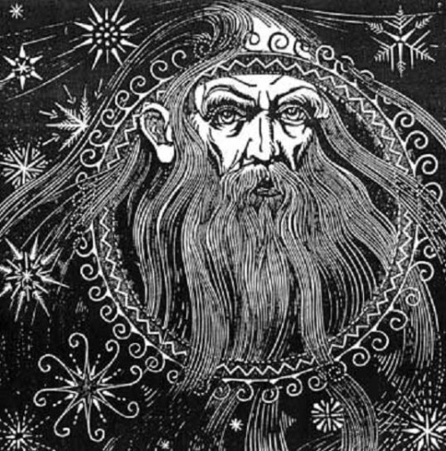
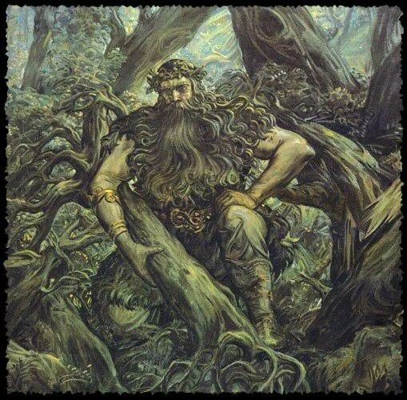
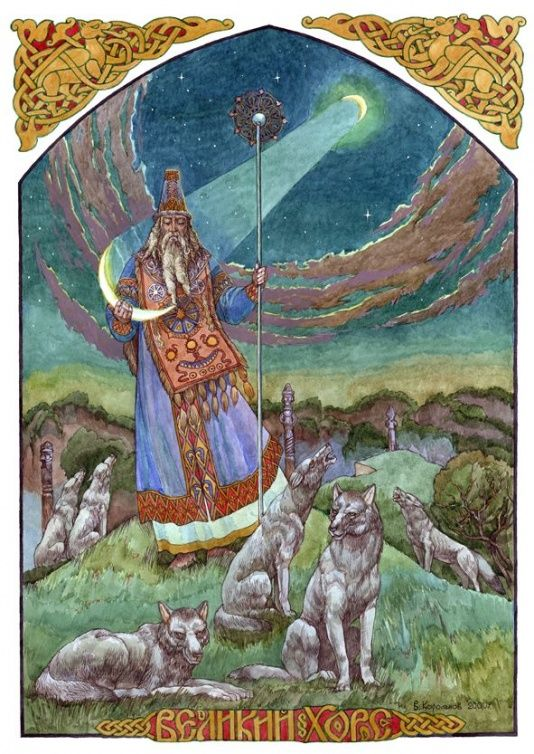
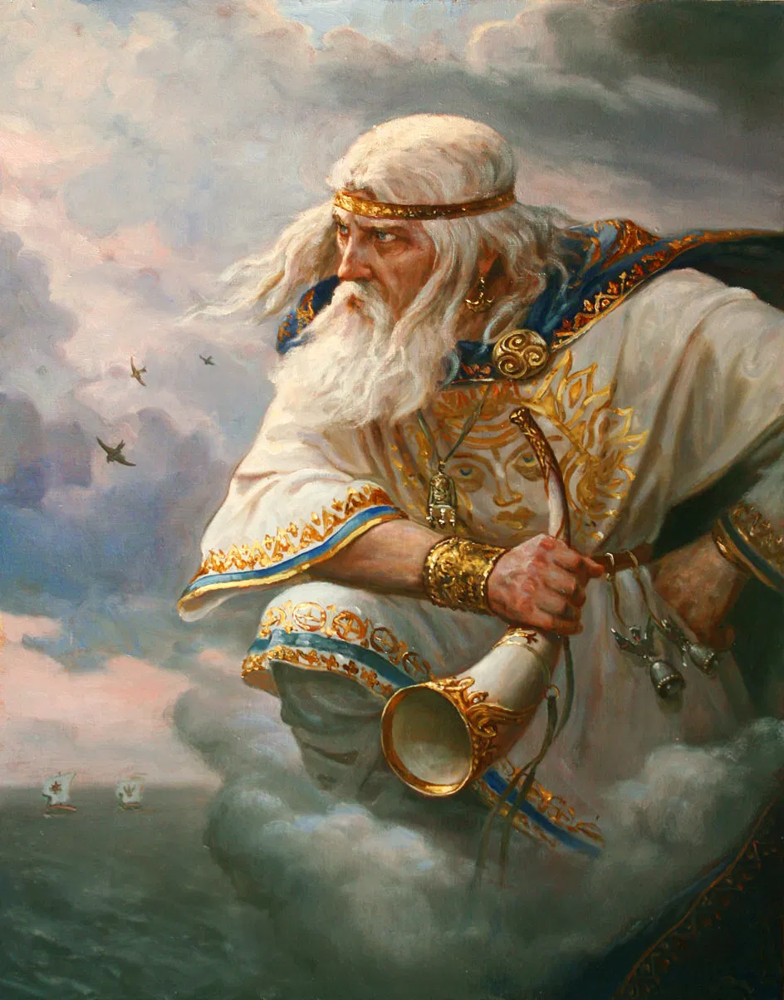
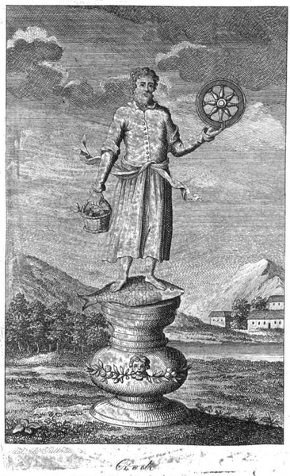
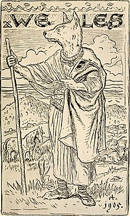

A Slavic God who gives life to the earth as he was also the god of the sun (solar heat) and rain, which are the most important conditions for human survival. He was also the god of the underworld and the founder of Slavs. In history he was commonly mentioned in various manuscripts and as such there is evidence of Dažbog worship among all Slavic nations making him one of the prominent gods in Slavic mythology.

Who said that all the gods are supportive? Berstuk was the evil god of the forest. This one, known as the forest spirit was often called ”the deity of evil”. He had a tricky as evilish nature, liked to spend time in the wild areas of the forests and looked a little bit like faun- had a human appearance with the goat legs.

When the sun appeared in the sky during the winter, people knew that God Hors helps them survive demanding time. He was a healer, whose support meant the winning over the illness. He brought healing and calming energy. He appeared in a famous text titled ”Tale of Igor’s Campaign.

He was a god of winds, air, and sky. Among the Slavic gods, he was the one who is believed to be the grandfather of the winds of the eight directions. Several Polish and Russian villages and lands were named to honor Stribog. For example the village Strzyboga near Skierniewice in Poland. Stribog was a popular character of Croatian legends.

The one who created all that exists, the supreme god who was the birth-giver. One of the deities that scared the Christianity so much that he was often mentioned in didactic works presenting pagans as followers of evilish power. His cult was popular in all of the Slavic regions.

His kingdom was the underworld, the corridors of the earth and waters. You can try to find him in the wet areas. He was believed to be bearded deity interested in music, magic, and trickery. Veles loved wealth, so very often appeared in rituals or celebrations related to harvesting. Moreover, some researchers believe that he was a Slavic version of Mitra.
